College gang meet with Sanjeev
Mar 17, 2019
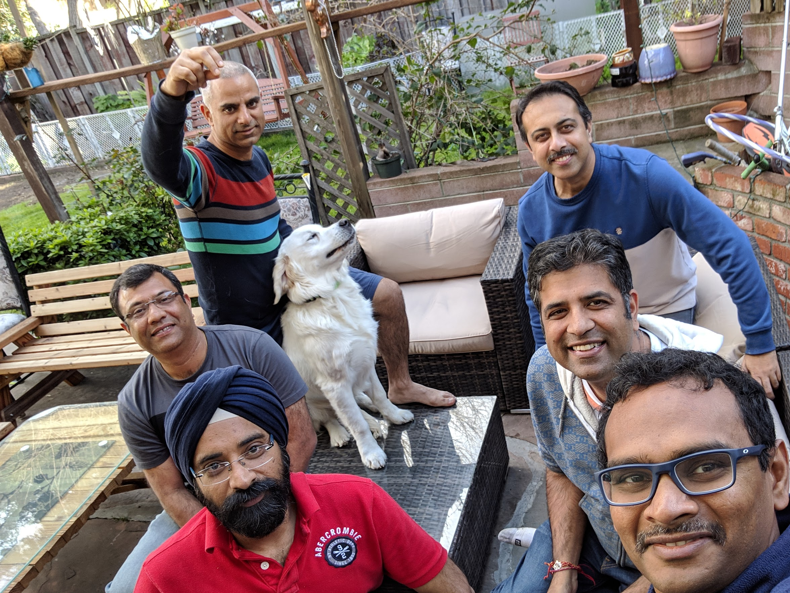 Sanjeev was visiting bay area for two weeks. After a tiring scheduling exercise, finally we could find a slot that worked for everybody and we met at Rahul's house. After looking at this picture, first time I felt we are indeed getting old.
Los Cabos
Nov 21, 2018
We spent an amazing ThanksGiving vacation this year in Los Cabos. This is a town at the southern tip of Mexico's Baja California Peninsula, best known for indulging hedonism. We picked the place for spending a do-noting relaxing vacation. I had my doubts why do I have to go 1,500 miles just to do that, but was overly convinced by many of our friends. We went there for 3 nights and 4 days. We stayed in Paradisus Los Cabos in San José del Cabo - an all-inclusive resort with ocean front. The hotel was really superb, it had numerous programs on all days. Dot had a gala time with petting zoo, horse riding, swimming in the pool and ocean. We enjoyed excellent food, swimming pool, listening to local music in some of the hotel programs. One day we went out for boat ride in lands end, went around the famous the Arch of Cabo San Lucas and stepped into ocean at Lover's beach.
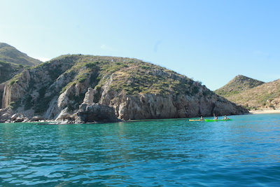 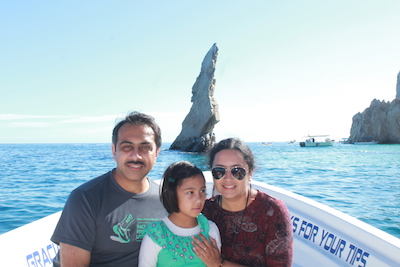
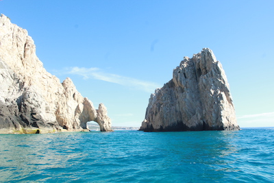
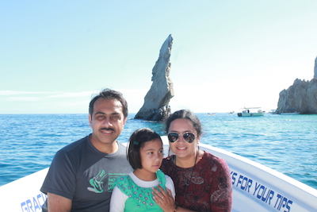
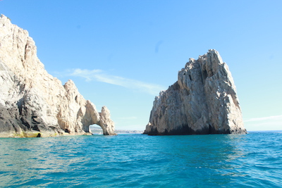
Alviso Marina County Park
Nov 5, 2017
It was a lazy Sunday morning, we casually planned to go out for lunch with friends. I've been to Maria Elena’s few years back with colleagues and liked the place for its location and ambience. The food was okay. We went for a walk after the lunch and noticed many folks are walking towards Alviso Marina County Park and decided of checking it out. Once we reached there, we were completely blown away. It appeared to be a mini Lake Tahoe. This is a huge salt pond. We had a lovely walk around the pond.
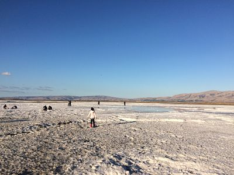 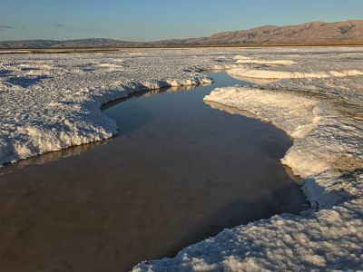 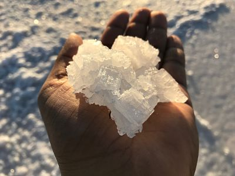 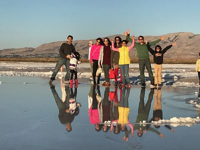
Despicable me 3
July 16, 2017
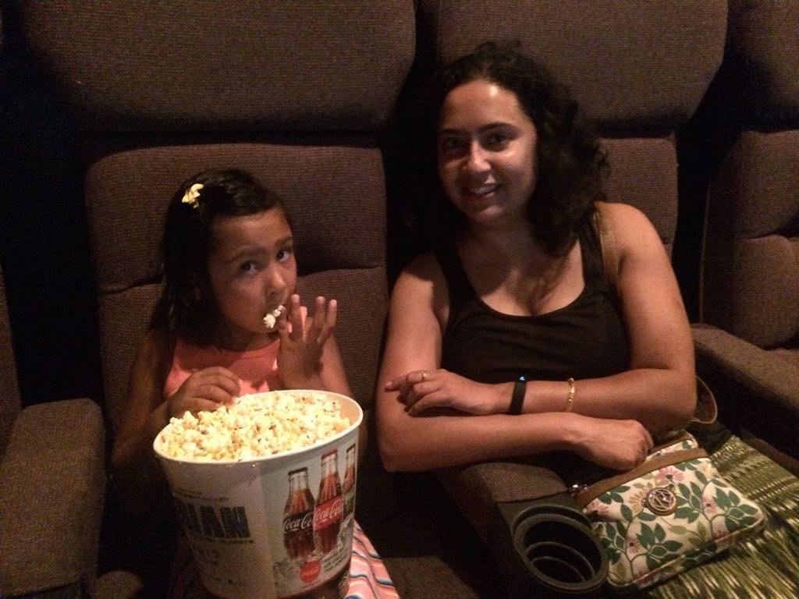 This is our second movie together at theater. Aditi enjoyed a lot. It was hard to explain her the relative sense of sound in movie theater. When we were whispering instructions in her ear, she was responding with full-voice. The movie itself was so-so, I was glad when it got over. She loved the popcorn bucket, she finished at least half of it (we were glad that her stomach didn't find that objectionable).
Her another favorite movie is "Secret life of pets". We always regret not watching it in theater. However, it makes me sad how they have portrayed the sausage song. It was very mean to show sausages as some form candy in a movie which is otherwise, so respectful to the animals.
Mission Peak Hike
May 29, 2017
DT and Dot are travelling. It is a pretty sad time for our family. Was not feeling good sitting idle at home over long weekend. Luckily friends were available - made last moment plans to hike mission peak with Rajib and afterwards had an awesome breakfast in Fremont Dosa place with Partha and Amrita. Turned out a pretty memorable memorial day .
Dot's first movie at theater - Jungle Book
June 12, 2016
|
We were waiting for a perfect movie that she can actually enjoy, and we won't have to walk out in the middle. Jungle Book seemed to fit the bill. Well, it turned out more than perfect - DOT was totally overwhelmed with the whole movie experience. She sang rhymes throughout the movie. She accompanied all the animals in the movie with roar, ooh ooh ahh ahh etc. We were having hard time to pursuade her to keep voice low. The only option we had to keep her excitement in check was to keep her busy with popcorn - while it lasted. We felt apologetic to other viewers who had to tolerate the extra sound effect. I hope they would understand. Overall, we had a wonderful wonderful time. We are looking forward for the next movie adventure now. |
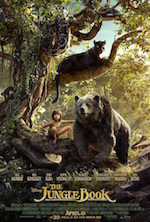 |
8 Elements
Apr 21, 2016
Finally we got a decent south Indian restaurant in south bay. In last few years many Indian families moved to south bay, as the schools are getting better. Many of our friends and colleagues have moved to Evergreen and Cambiran areas. But, there were not a single notable Indian restaurant. This is going to be big hit.
See you soon DT and ADITI
Nov 22, 2015
Today, Depanwita and Zoya took off off to India. I'll probably joing them in a month and come back together. Having a hard time staying without them .. hopefully I'll get over it in few days.
Modi's Bay area visit
Sep 27, 2015
Depanwita had a dance performance at SAP Center at Indian community reception of Indian prime minister Narendra Modi. This was huge. They rehearsed day and night throughout the week. Everything came out very well. I didn't attend the function - I was busy dropping and picking them and taking care of Dot. I watched it live at Rajib's place. This day is going to stay vivid in our memory for a long long time.
Loop with Waze
Sep 2, 2015
I had to start early from work as my wife had a rehearsal and I had to baby seat. It was 5:30 pm - should not actually be called early - but, bay area traffic has changed our work hours. In bay area, the recommended office hours are 11 am to 7 pm or later. If you try to be early, you will be penalized by "time out" in your car for at least half an hour. Any way, looking at traffc, I turned on waze - hoping waze will find ways to get me out of this parking lot. I took 280S and merged to 85S and came close to De Anza. It was stop and crawl (by inches) throuout. Just before De Anza, Waze had a change of heart - it sprung to life and declared "We got it" take exit and take 85N and 280S. Basically it wanted me to go in the reverse direction and continue 280S. So, theoritically it is possible that Waze can potentially put you in a loop, if traffic condition keep on changing frequently. Funy .
My home page is taking some shape
Aug 6, 2015
Got some time today after office. Got the picture section up. I felt reeally good. There are some days, when things just happen without much effort. Although, most of my days are of opposite types
Visited friend's place at Pleasanton
Aug 2, 2015
Today we went to Pleasantan to meet some friends. Had a good time and LOTs of good food.
BTW, I should mention why am I writing this stuff here. There are two main objectives:
- to take a note of the memorable events of the day.
- try to do something worth mentioning every day.
I'm still trying this out. I don't know if this would be sustainble thing. We will see.
Party and Work
Aug 1, 2015
Went to one of my friend's b'day (LOL)party. It was very nice gathering, and awesome food .. very relaxing. Zoya had a great time too.
Finally got my website up. I tried and failed many times in the past. It felt like an impossible task to design and maintain a website, which I can actually like. Finally, I got Bootstrap - this is the right amount of abstraction for my need. Now I can focus on the design and code which really matters to me. Kudos to Mark Otto and Jacob Thornton !!! I think, this is a giant leap towards simplifying web design.
Daddy and Dot's day out
July 31, 2015
Today I got locked out with my daughter without phone, wallet and keys. We had a nice daddy and daughter homeless adventure for few hours. It got me thinking about another aspect of life.
VMware Poster Presentation
July 30, 2015
Today I went to VMware intern poster presentation. I was feeling very nostalgic. In my school days, I used to participate in many science exhibitions. I should go to this kind of presentations more often. It reminds me that there are so many things to do, and all the things are not that difficult. I'm not sure, if I can share anything about the demos here. So holding my temptation.